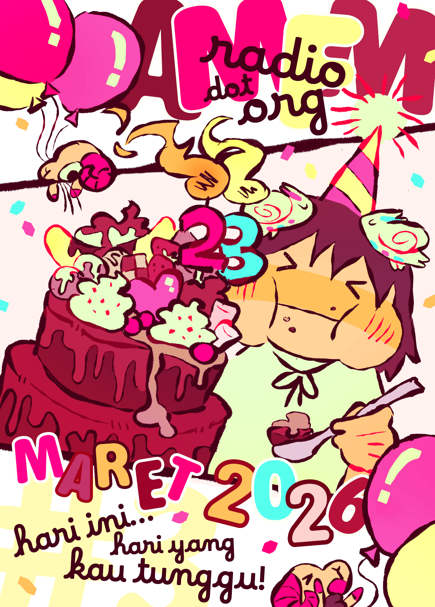
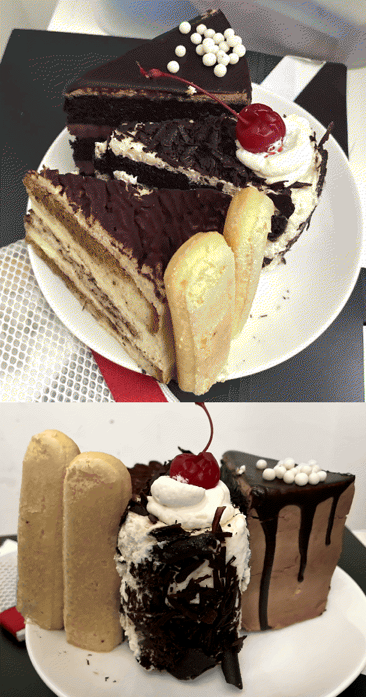
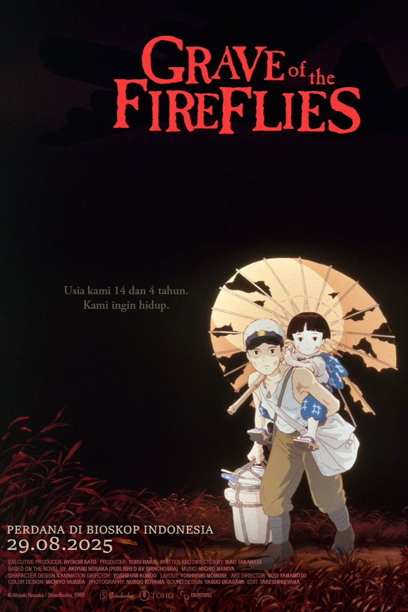
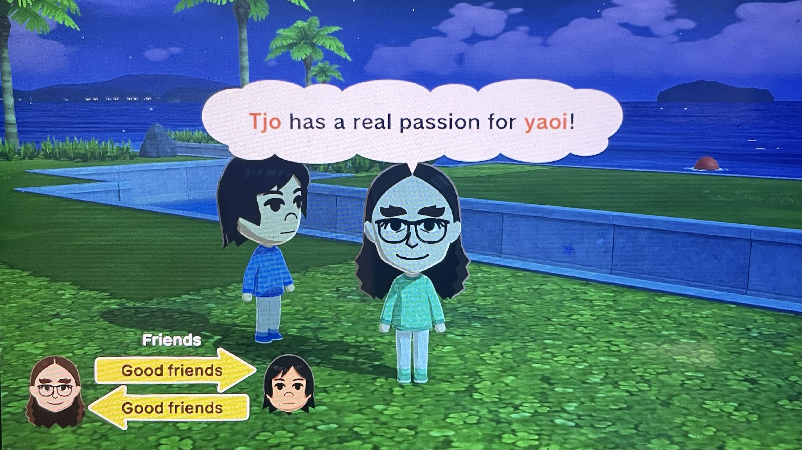
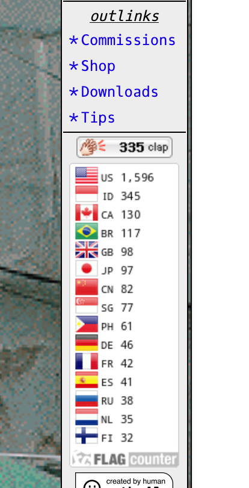

[2026/03/31]
Maret 2026


It’s my birth month! Growing up as a huge introvert I actually never really celebrated my birthday with anyone. I remembered that I had a class birthday party once when I was seven years old or something, but that was it. This year, I wanted to try to do something that I could be happy about, so I hung out with a few friends over video chat, and we each got cake slices to eat together while we talked about random nonsense I don’t remember. It was mostly just them talking I think. I was always more of a listener. Here’s the cake slices I got: they are chocolate, tiramisu and black forest. I actually bought too much cake, and it took me a week to finish all of it. I think they were quite nice though. We watched a movie together. We didn’t have a particular one in mind so we streamed Grave of the Fireflies. Holy shit, it really is as depressing as people said. My first exposure to this movie was when a friend recently told me that when they were a kid, and their father first watched this movie, it affected him so much that at the end of the movie he just looked at his kid and cried or something, so I did already have an expectation that it will be sad before going in.
I think that animation as a medium is the only thing that could capture the bleakness and the sadness of being orphans struggling during wartime. I’m not sure if the same sadness could be captured with a live action set, or if real child actors accurately portray the sadness that Setsuko and Seita do. It’s difficult to swallow that there’s so many kids out there like the ones in this movie who never really got a shot at life in the present day. It's one of those things that makes you weirdly grateful for your current circumstances.. Do I recommend this movie? Yeah. Will I ever watch it again? No.On a lighter note, working so much has led me to being able to save a little bit of money, so I’ve been able to justify buying trivial stuff a bit more, like stationery to mail to friends or video game merchandise. It’s nice to be able to buy stuff when you’re a working adult. Now that I’m thinking about it, your worst adult days don’t feel as bad as how your worst teenage days do. Like, a bad day as an adult means being a little late to pay your taxes, or having to go to the doctor, the post office, and the grocery store all in one day, or doing something just normally tiring for everyone, which makes sense. But your worst teenage days are always some shit like, your parents yelling at each other and slamming doors at 10pm while you’re trying to sleep so you don’t do badly on the stupid math exam you have at school tomorrow. Or having to deal with people older than you constantly asserting their financial/parental/material control over you and you being powerless to stop it or do anything. Or your friends ganging up on you and you have nowhere to go and no one to talk to since everyone’s sharing the same friend group, and then rumours about you start spreading around said friend group, and then drama starts to happen... Just a few scenarios off the top of my head. It’s crazy to think that all those talks about how “it gets better when you’re older” when you were a suicidal teenager turns out to be true. The worst day in your adult years don’t hold a candle to the worst day in your teenage years. If you’re in those horrible, ugly teenage years, just keep trudging through. There really is a light at the end of the tunnel.
Anyway, I’ve been playing the Tomodachi demo, and it’s real fun. I made myself and my friends. Can’t wait for the full game. I’m fully prepared to drop sixty USD on it. Why are video games so fucking expensive now? I don’t get it. It would be nicer if AAA video game companies did country-specific pricing like steam does (I’m paying less than ten USD for each game on there), but I guess not. I think it’s okay to gaslight yourself into splurging on things you really want, so in the end, it's okay. I got Miitopia when the game dropped, and I enjoyed it immensely, so I have high hopes for this game. Can’t wait to see V1 from Ultrakill interact with Hatsune Miku.

I’m in the process of renovating the site! Well, I’ve been testing it out a little at the very least. Yesterday, I sat down in front of the computer and coded for thirteen hours nonstop, just brainstorming and testing out ideas on an updated site layout, and I think all that testing really cemented the fact that I want to make a new and improved amfmradio dot org. I really like this current version, and I have so many people complimenting it all the time, which makes me super happy! But I’ve got some major gripes with it right now. Here’s just a few problems I have:


click me!

link me!


link me!
est. 2024 © amfmradio.org